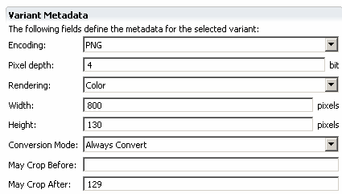

MCS can use the Image Conversion Service (ICS) to convert image variants by transforming the size, encoding and color depth to make the resulting variant suitable for a target device.
You define convertible image variants in the Image component editor. MCS uses the image as the basis for a real-time transformation operation that optimizes it for use with a specific device. For example, a request from a WAP phone might be satisfied by transforming a large, color JPEG image into a small, WBMP image.

You can choose only one convertible image variant for a given image component by setting the Conversion mode to 'Always convert'. If you have also chosen a device specific variant MCS will process it first. If the convertible variant cannot be used for the current device, then MCS will process any generic variant you have defined.
When the transformation involves a change of image size, ICS maintains the aspect ratio, and scales it using the Width and Height attribute values.
If you have a wide but shallow convertible image, like a banner that will scale badly to a small screen, you can specify values that will have the effect of cropping an image area to preserve - before the scaling operation takes place (you cannot crop vertically).
You can set inclusive values for the left and right pixels of the area to preserve on the original image, using the May crop before and May crop after controls. The pixels are counted from the left of the image and start at 0.
For example, if your company logo occupies the leftmost 130 pixels of a banner, you can set the May crop after value to 129. If necessary, ICS will crop the image to the right of this vertical line, before scaling it to fit the device screen width. If you do not set either value the image will be scaled without cropping. Vertical cropping is not supported.
In XDIME, you can refer to images using the img or logo elements. Both elements can take one of three attributes to name a component or specify a URL.
You should use the src attribute to name a component containing a convertible image variant. To locate an image on the file system use the url attribute. If you use the urlc attribute, MCS locates a convertible image file (as distinct from a component name) to be used for transcoding.
You can also use the CSS function mcs-transcodeable-url() to allow rewriting of background and list item image URLs for ICS. This function uses the asset transcoder to rewrite the URL, for example by adding a transcoding rule and the necessary transcoding parameters. It does not provide an alternative text if the image cannot be loaded.
background-color: #FFFCCC
background-image: mcs-transcodeable-url('http://localhost:8080/image.gif')
Related topics
Working with XDIME
Types of variant